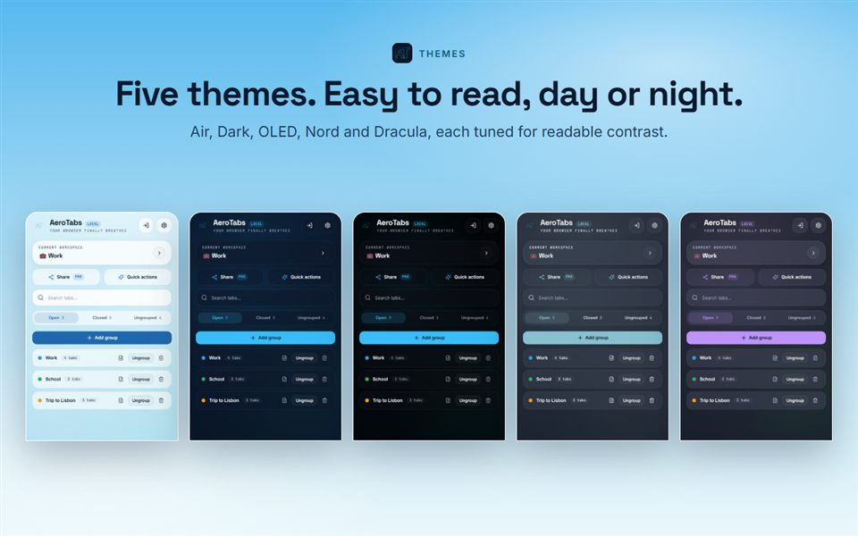

AeroTabs
Extensão para Chrome e Firefox que põe a dormir os separadores que não estou a usar, para libertar memória. Também os arruma em grupos e espaços de trabalho, sincroniza com o Supabase e partilha sessões cifradas. Estou a preparar a publicação nas lojas do Chrome e do Firefox.



JavaScript · Manifest V3 · Supabase